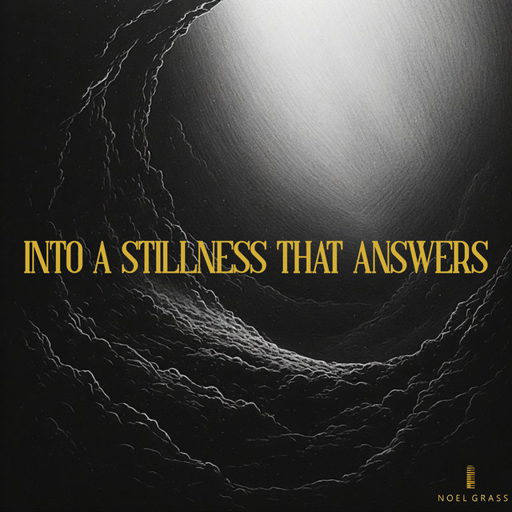
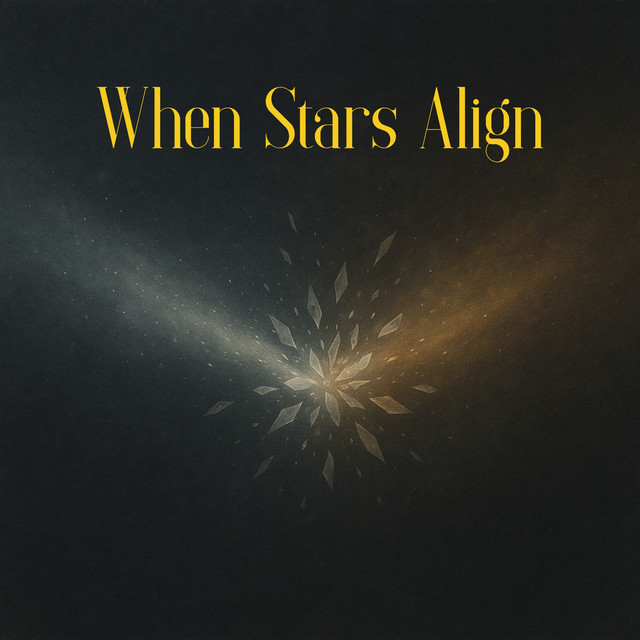
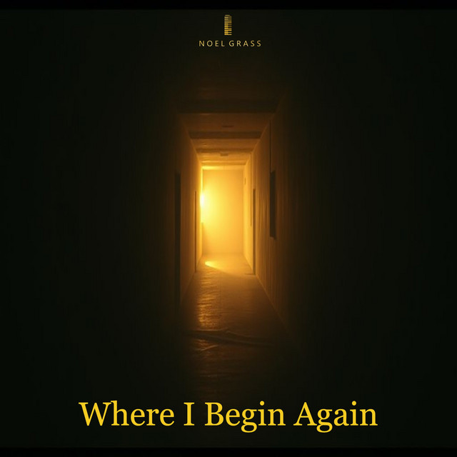
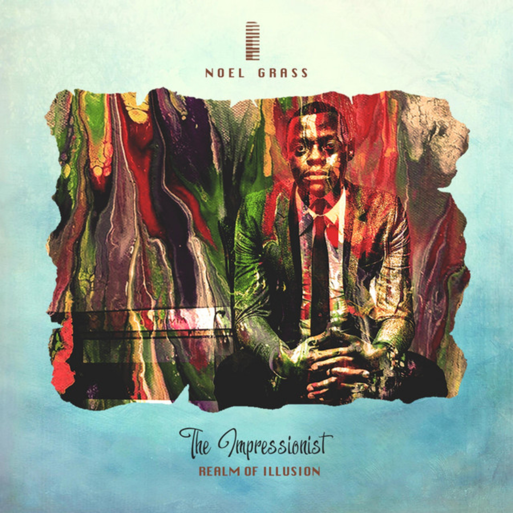
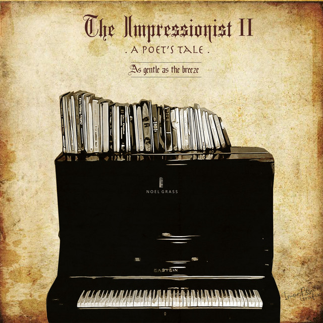
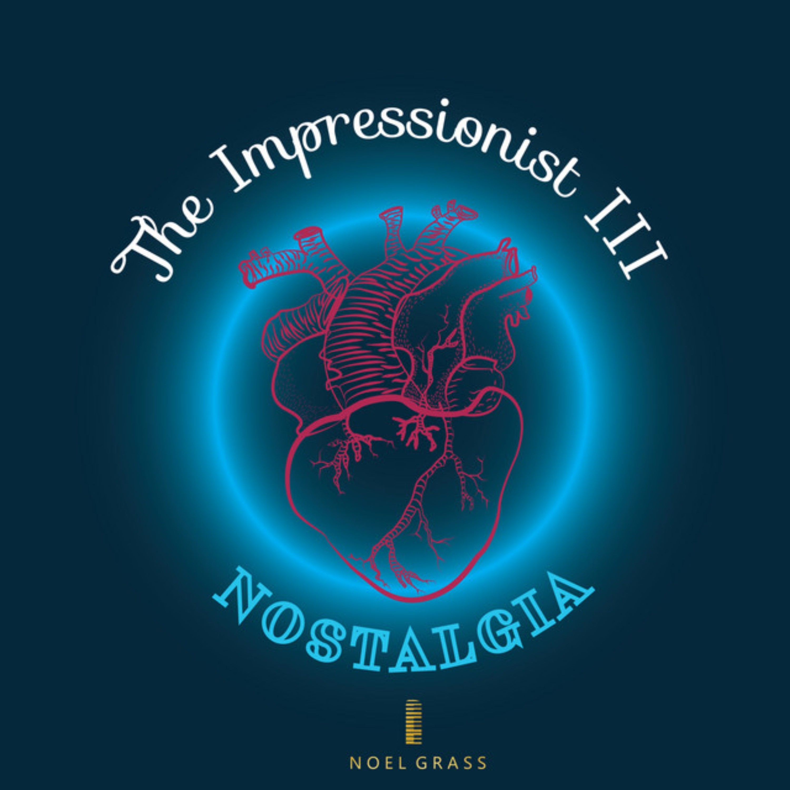
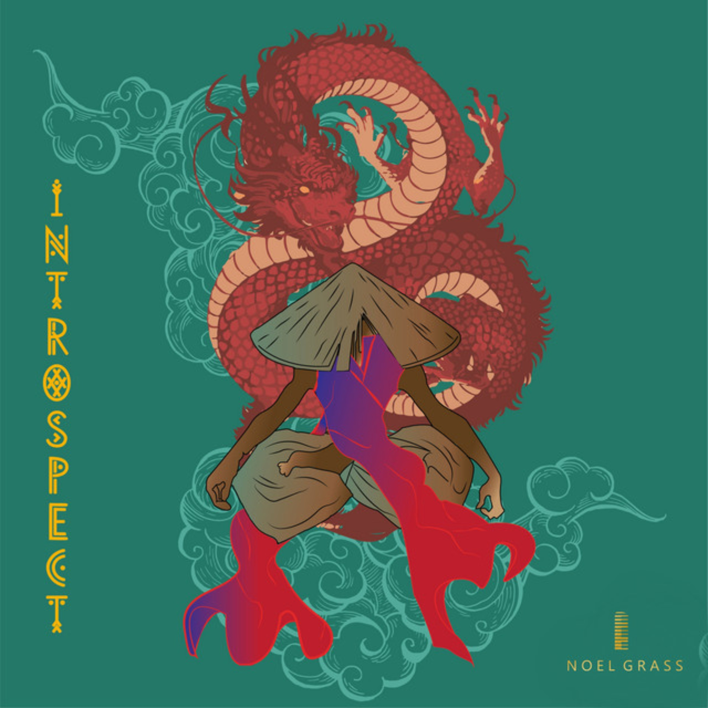
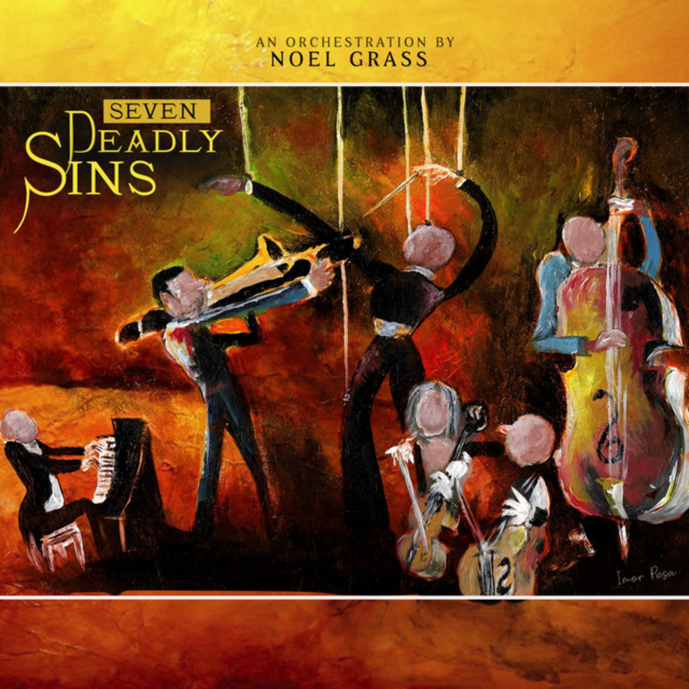

Discography
Solo Works: Cinematic CompositionsA curated archive for deep listening — standalone compositions written not to fit a specific visual scene, but to define an internal state of being.
Solo Piano · Orchestral · Hybrid · Ambient
(Click on the Image to Explore the Sounds)

Into A Stillness That Answers
Solo Piano

When Stars Align
Ambient

Where I Begin Again
Solo Piano
Agent 254
Hybrid

The Impressionist
Solo Piano

The Impressionist II
Solo Piano

The Impressionist III
Solo Piano

Introspect
Ambient

Seven Deadly Sins
Orchestral